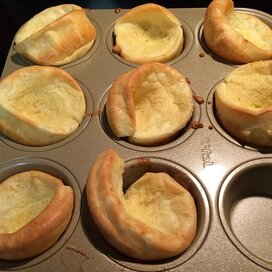

Quick and Easy Yorkshire Pudding

A great, quick and easy recipe for Yorkshire pudding.
Ingredients
- 3 eggs
- 1 cup milk
- 1 cup all-purpose flour
- 2 tablespoons butter
Steps
-
Preheat oven to 375 degrees F.
-
In a medium bowl, beat eggs with milk. Stir in flour. Set aside.
-
Divide butter evenly into twelve cups of a muffin tin, about .5
teaspoon per cup. Place tin in oven to melt butter, 2 to 5 minutes.
Remove tin from oven, and distribute batter evenly among buttery cups.
-
Bake in preheated oven 5 minutes. Reduce heat to 350 degrees, and
bake 25 minutes more until puffed and golden.